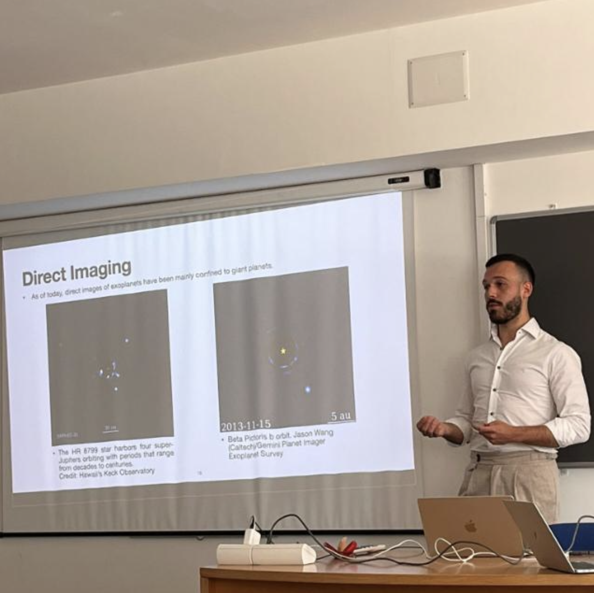
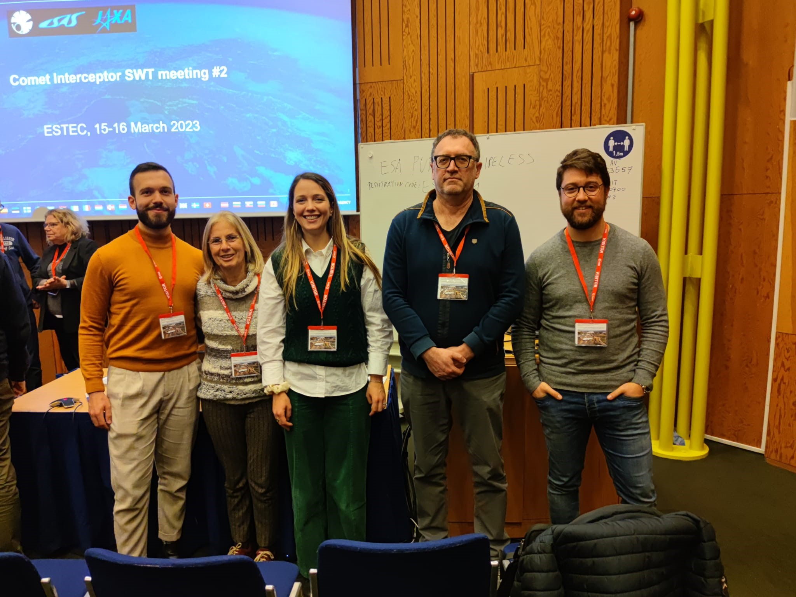

About Me

Stefano is enrolled as Ph.D. in the International PhD Programme UNESCO Chair on Environment, Resource and Sustainable Development
at Parthenope University of Naples,
working in the Department of Science and Technology. Currently, he is involved in
the development of Machine Learning (ML) methods to identify exoplanets in Kepler
and TESS data. He is also the principal observer in the project "Comets beyond 4 au:
supporting ESA Comet Interceptor mission by modeling cometary dust production (Asiago)"
with Principal Investigator Elena Mazzotta Epifani.
He obtained his master's degree in Machine Learning and Big Data from Parthenope
University of Naples, Italy, in 2022.
As he is very keen in improving his communication skills (e.g. giving talks, effective writing), he attended several courses
and schools mainly held by Nature Masterclasses
Education
- 2022-now: Ph.D. student in the International PhD Programme UNESCO Chair on Environment, Resource and Sustainable Development
at Parthenope University of Naples
- 2022: MSc in "Machine Learning and Big Data" (110L/110, special mention), Parthenope University of Naples, Italy.
Thesis: A CNN for automatic vetting of planet candidates in TESS data with Transfer Learning
Supervisors: Alessandra Rotundi, Angelo Ciaramella, Laura Inno.
- 2019: BSc in Computer Science (103/110), Parthenope University of Naples, Italy.
Research Interests
- Machine Learning;
- Exoplanets detection methods;
- Comets observations.
Read more in the Research page.
Publications
Below is a list of links that you can use to access my publications and activities:
Research

Comet Interceptor Science Working Team Meeting #2, ESA-ESTEC, Noordwijk. From left to right: Stefano Fiscale, Prof. Alessandra Rotundi, Alice Maria Piccirillo (Ph.D. student), Prof. Ivano Bertini, Stefano Ferretti (Research fellow).
Read more here
I am currently involved in the two following research topic: (i) identification of exoplanets and (ii) observations of comets.
Identifying exoplanets by Deep Learning
I approached to this research topic during my MSc studies in 2019. I am focusing on the identification of exoplanets in the data collected by space-based transit surveys
like NASA's Kepler and TESS. To this aim, I design both supervised and unsupervised ML algorithms.
As of today, the supervised ML algorithm I developed is a Convolutional Neural Network (CNN). This network,
which is trained on Kepler and TESS data, achieves appreciable predictive performance as it correctly classifies the 88% of real
exoplanets. For further details about this work, the reader may find useful to read the original articles:
Fiscale et al. (2021),
Fiscale et al. (2023).
Comets Observations
With my supervisor (Prof. Alessandra Rotundi) I am devoting part of my research work in support of the ESA Comet Interceptor mission.
More precisely, I am co-investigator of the two projects (PI E. Mazzotta Epifani) listed below:
- Comets beyond 4 au: supporting Comet Interceptor mission by modeling cometary dust production (Asiago Astrophysical Observatory);
- Observing distant comets in support of the ESA Comet Interceptor mission (Telescopio Nazionale Galileo).
Since February 2022, I am monthly visiting the Asiago Astrophysical Observatory in order to acquire imaging data of certain distant new comets.
To learn more about this project: Fulle, M., et al. (2022),
Mazzotta Epifani, E., et al. (2023)
What's next
- December 2023: Visitor observer at Telescopio Nazionale Galileo (TNG, La Palma, Canary Islands).
Presentations
Here is the list of all the conferences where I gave a talk to present my works:
- 109° Congresso Nazionale, Società Italiana di Fisica. Salerno, Sept 2023
- 4th Advanced School on Exoplanetary Science (ASES 4). Vietri sul Mare, May 2023
- The Italian Workshop on Neural Networks (WIRN) 2022. Vietri sul Mare, Sept 2022
- 44th COSPAR Scientific Assembly 2022 (virtual), Jul 2022
- European Astronomical Society, Data Science & AI. Valencia (Spain), Jul 2022
- XVII Congresso Nazionale di Scienze Planetarie. Naples (Italy), Jun 2022
- The 5th Azarquiel School of Astronomy (virtual), Nov 2021
- European Astronomical Society, Data science & Archives (virtual). Jul 2021.
- American Astronomical Society (AAS), Exoplanets with TESS (virtual). Jan 2021
Contact
Feel free to reach out to me anytime; I'd love to connect with you and talk about good science.
Email: stefano.fiscale001@studenti.uniparthenope.it
Address:
- Centro Direzionale di Napoli, Isola C4 - 80143 Naples, Italy;
- Villa Doria d'Angri. Via F. Petrarca n. 80 (80123) Naples, Italy.